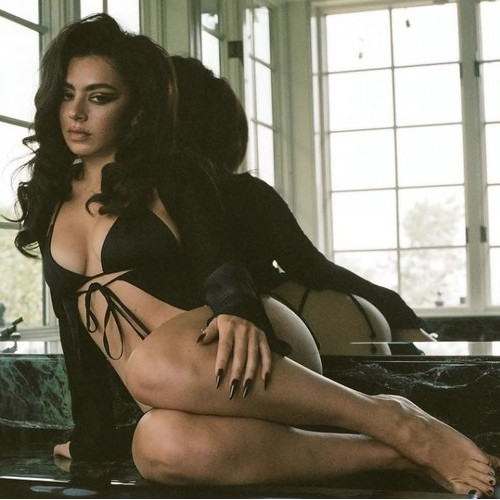
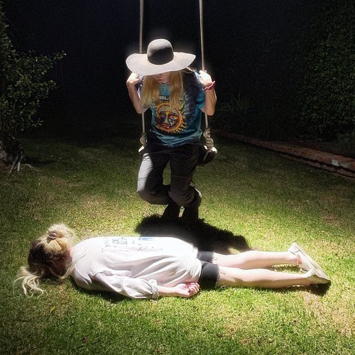
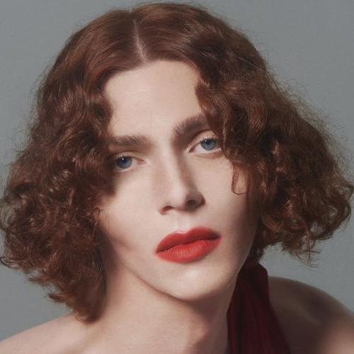
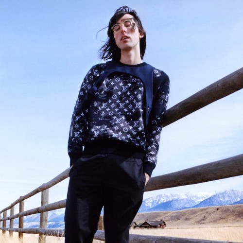
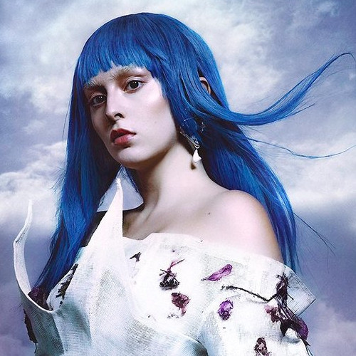
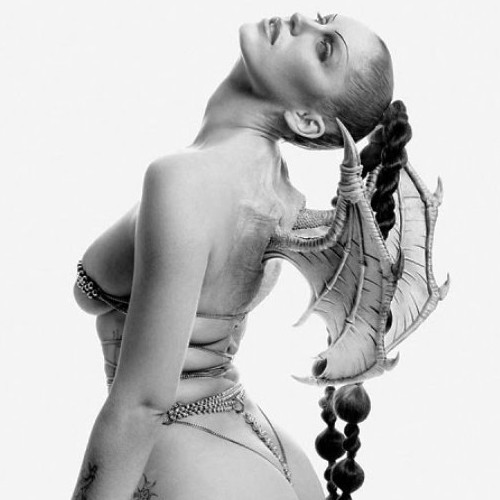
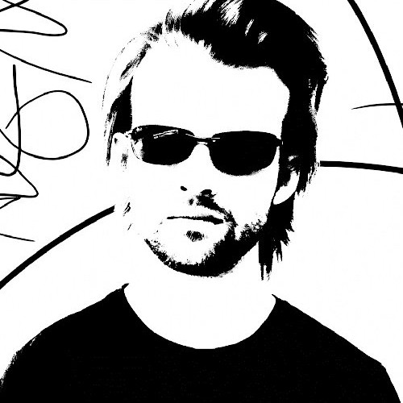
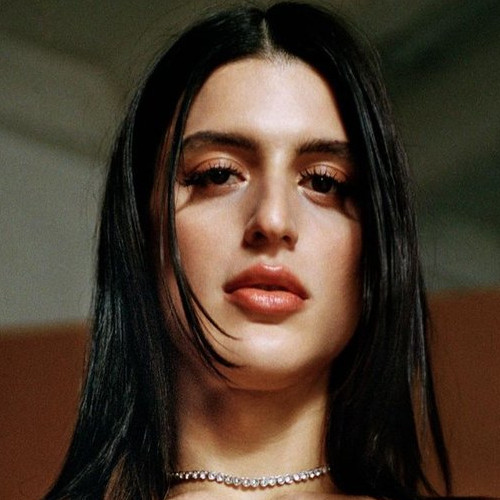

|

Charli XCX 1.238.718 oyentes Charlotte Emma Aitchison (Cambridge, Inglaterra, 2 de agosto de 1992), conocida profesionalmente como Charli XCX, es una cantante y compositora… |

100 gecs 369.258 oyentes 100 Gecs es un dúo musical experimental estadounidense compuesto por Dylan Brady y Laura Les. Amigos de la escuela secundaria que crecieron en… |

Sophie 371.157 oyentes Sophie (17 de septiembre de 1986 en Glasgow-30 de enero de 2021 en Atenas) fue el seudónimo de la productora musical originaria de Escocia… |
|

A.G. Cook 151.400 oyentes PC Music es un sello musical, colectivo artístico, fundado por A. G. Cook en junio del año 2013 en Londres. Lo que comenzó como un proyecto casual que aglutinaba una visión diferente, plástica, colorida y vanguardista del pop y la estética… |

Ashnikko 414.580 oyentes Ashton Nicole Casey, más conocida como Ashnikko, es cantante, compositora y rapera estadounidense. Saltó a la fama con su sencillo del 2019… |

Eartheater 105.500 oyentes Alexandra Drewchin, conocida profesionalmente como Eartheater, es una multiinstrumentista, productora, compositora y vocalista estadounidense. Nacida en North East, Pennsylvania, actualmente vive en Queens, Nueva York… |
|

Gupi - FoodHouse 46.718 oyentes Spencer Hawk (born March 26, 1999), also known by his stage name, Gupi (stylized as gupi), is an American electronic musician… |
100 gecs 369.258 oyentes 100 Gecs es un dúo musical experimental estadounidense compuesto por Dylan Brady y Laura Les. Amigos de la escuela secundaria que crecieron en… |

Arca 324.800 oyentes Arca es el proyecto experimental/glitch de la productora venezolana Alejandra Ghersi. Sus trabajos bajo el seudónimo Arca, incluyen: "Stretch 1", "Stretch 2" y el mixtape "&&&&&" publicado en el año 2013… |